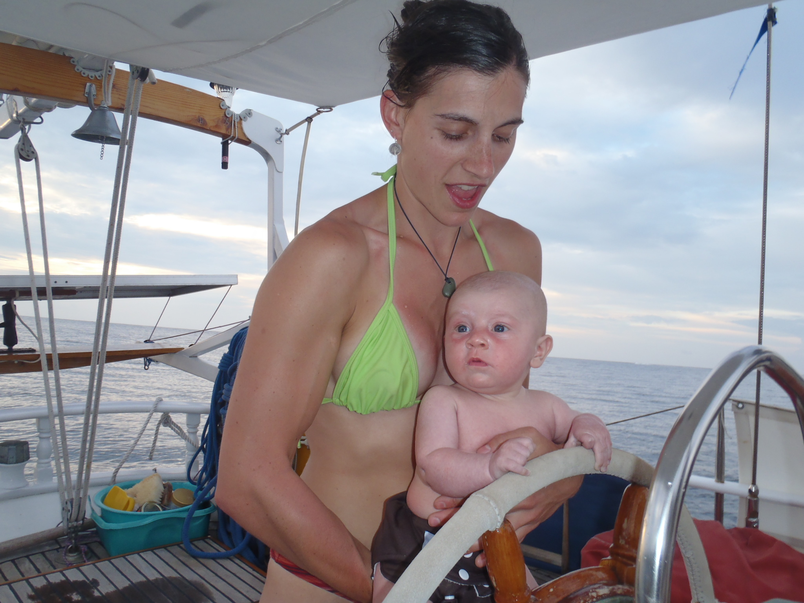
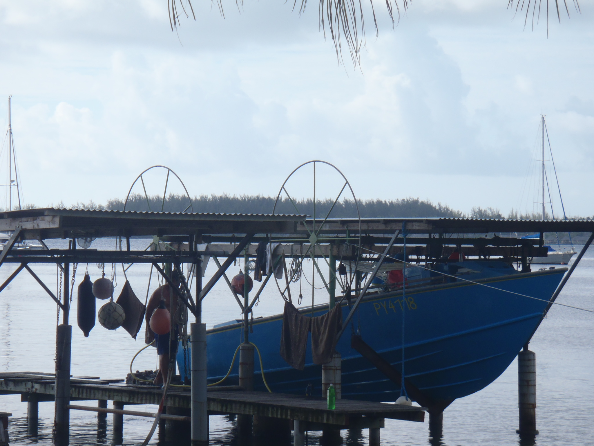

Îles du vent, Tahiti, Moorea

On est ensuite rejoints par Sky et ses parents. Après un moment pour que chacun s'habitue au décalage horaire et au rythme de la Polynésie, on
va faire du bateau, la première navigation pour Sky ! Le 16 décembre, on retourne à la Pointe Vénus, abritée de la houle et du vent, et d'où on peut partir n'importe quand.
Le jour suivant, on part pour Moorea. On va à la baie d'Opunohu, sur la côte nord de Moorea. La baie fait deux milles de profondeur, on commence d'abord
par mouiller dans l'anse Robinson, près du fond de la baie, à l'ombre. Mais il y avait trop de bestioles pour l'équipage - et Skip Sky - on a donc dérapé
et remouillé à Vaipeu, plus près de l'entrée de la baie, juste après la passe, dans l'est. Ce mouillage-là correspond beaucoup plus à ce qu'on s'imagine de la Polynésie,
des plages de sable blanc, de l'eau turquoise et transparente... On voit - encore - notre ancre posée au fond.
Moorea ressemble à un mélange de Marquises et de Tuamotu. C'est une île volcanique - qui ressemble un peu à Ua Pou de loin - avec un récif,
et un lagon, avec tous les poissons qui vont avec. Plonger là-dedans, c'est comme regarder un film au cinéma.
|
 Retour de Moorea le 20 décembre contre le vent - un bon 5 à 6 Beaufort - mais pas trop de houle.
On a en fait la mer du vent, et c'est bien assez pour la majorité de l'équipage... Le petit Sky s'est très bien comporté, lui. On a repris un coffre
à Arue, toujours au Yacht Club de Tahiti.
Retour de Moorea le 20 décembre contre le vent - un bon 5 à 6 Beaufort - mais pas trop de houle.
On a en fait la mer du vent, et c'est bien assez pour la majorité de l'équipage... Le petit Sky s'est très bien comporté, lui. On a repris un coffre
à Arue, toujours au Yacht Club de Tahiti.
La mer était un peu dure - rien à voir avec l'idée qu'on s'en fait à la lecture des prospectus - qui ne correspond guère à ce qu'on imagine quand on pense "Tropical"...
On portait yankee, trinquette, grand'voile à deux ris, et artimon haut.
 En assurant le coffre, j'ai remarqué du mou dans les moustaches (principalement celle de tribord).
En cherchant plus loin, c'était à cause d'une fissure dans la cadène de moustache tribord... Celle de babord a reçu aussi.
Il faudra changer les deux...
En assurant le coffre, j'ai remarqué du mou dans les moustaches (principalement celle de tribord).
En cherchant plus loin, c'était à cause d'une fissure dans la cadène de moustache tribord... Celle de babord a reçu aussi.
Il faudra changer les deux...
C'est pour sûr arrivé pendant cette dernière étape, de Moorea à Tahiti. Probablement quand on tanguait dans cette mer,
plusieurs fois le bout-dehors était dans l'eau, à embrocher les vagues dans le canal de Moorea.
Puis on attend... On s'habitue à la facon polynésienne de faire du business. On est allé à Techni Marine,
ils peuvent faire de nouvelles cadènes, et ils ont l'air d'être compétents. On doit attendre le devis, et le job devrait aller assez vite.
Le truc, c'est que celui qui s'occupe de la machine à couper l'inox est en vacances jusqu'à mardi (28 dec), tant mieux pour lui.
Bon, on va pas se plaindre...,
à cette époque de l'année, ça aurait été pareil dans beaucoup d'endroits dans le monde, et d'être coincé ici, c'est sûrement pas ce qu'il y a de pire.
On visite Pape'ete et ses environs...
 Le temps à Arue - où nous sommes - nous rappelle Oyster Point, il arrive que ça souffle. Mais c'est l'alizé, il est chaud.
Il pleut durant les grains, mais ça ne dure pas (en général).
Le temps à Arue - où nous sommes - nous rappelle Oyster Point, il arrive que ça souffle. Mais c'est l'alizé, il est chaud.
Il pleut durant les grains, mais ça ne dure pas (en général).
On a notamment visité la presqu'île de Taiarapu (Tahiti Iti), le plateau de Taravao. Pauline nous avait dit que ça ressemble à la Normandie,
c'est pas faux. Mais j'aurais dit la Suisse, c'est nettement moins plat que la Normandie.
En tout cas, c'est bien joli... Et comme à Napa Valley, c'est toujours inhabituel de voir des vaches brouter sous des palmiers...
On a fait le tour de l'île en voiture, la côte nord est vraiment sauvage. Il y a pourtant des endroits apparemment abrités, près de
l'isthme de Taravao (entre Tahiti Nui et Tahiti Iti).
|
Jeudi 30 décembre 2010
On a eu les nouvelles cadènes hier, comme prévu.
Elles sont en place, on est prêt à partir. Corine termine les courses, on fait un peu de nettoyage, l'idée étant de dégager sur Moorea
demain. Le temps est maintenant gris, et très pluvieux. On a eu des grains hier soir, décrits par des locaux (Laura & Pauline) comme
les plus forts jamais vus ici...
C'est en fait censé être la saison des pluies, en ce moment.
|
Vendredi 31 décembre 2010
 Les prévisions météo ne sont pas terribles aujourd'hui..., elles annoncent une mer forte, et des rafales à 40 nœuds.
Les prévisions météo ne sont pas terribles aujourd'hui..., elles annoncent une mer forte, et des rafales à 40 nœuds.
Ce temps est généré par une dépression dans notre sud-ouest, qui se déplace dans le sud-sud-est. Elle devrait donc dégager, on va attendre.
La photo à gauche représente la même zone que celle du dessus, celle avec l'arc en ciel, pendant un grain. Le vent a atteint 35 nœuds dans celui-là.
En tout cas, on est prêt. On prendra un autre bulletin ce soir - sinon avant, et on verra bien ce qu'on peut faire.
|
Îles du vent, Moorea
Samedi 1er janvier 2011
Les prévisions sont moins alarmistes qu'hier..., allons-y !
Le Yacht Club de Tahiti nous a fait cadeau du dernier jour.
On quitte le lagon d'Arue par l'ouest, c'est pas large (25 mètres par endroit), mais ça passe.
On retourne à Moorea, avant de faire route sur Huahine.
On a encore un force 6 établi, d'est ; ce qui fait qu'on est pratiquement vent arrière. Pas de houle significative,
ça va bien. Yankee, et deux ris dans la grand'voile, on fait le trajet à 7 nœuds de moyenne, en zigzagant entre les grains.
Et nous voila remouillés pratiquement au même endroit que l'autre fois, c'est toujours aussi joli.
|
Le mystère du poisson à hélice...
 Nous voilà donc de nouveau à Moorea, à l'entrée de la baie d'Opunohu, comme la dernière fois avec Sky, Brendan & Chloé.
Nous voilà donc de nouveau à Moorea, à l'entrée de la baie d'Opunohu, comme la dernière fois avec Sky, Brendan & Chloé.
À propos de la dernière fois, en revenant d'un séance de plongée, Corine nous a declaré "J'ai vu un poisson à
hélice, c'est comme ça qu'il bougeait". Tout le monde a bien rigolé, sur le mode "Mais bien sûr...",
mais elle a insisté "Si c'est vrai, c'est possible, pourquoi est-ce que vous ne me croyez jamais ?".
Et tout le monde de re-rigoler, plus fort.
Et bien voilà une explication possible.
Partout dans le lagon, il y a de ces escargots de mer, des "lambis" (les locaux les appellent des "sept doigts"), ils sont gros, la coquille fait bien 30 centimètres de long,
et 15 de large. Certains sont couverts d'algues, qui poussent en spirale... Et quand ils se déplacent, les lambis utilisent leur
pied (une espèce de grosse langue degueulasse), c'est comme si ils progressaient par petits bonds, en laissant la trace d'un escargot
dans le sable derrière eux. Quand on voit un tel coquillage, couvert d'algues en spirales, faire ce genre de petits bonds,
on peut très facilement le prendre pour un poisson à hélice !
Mystère résolu !
"Ah tu vois ? J'avais raison !"
|

|
Sur les bons conseils de Pascale & Yvan, on est allé en vélo au Belvédère de Moorea, duquel on a une vue magnifique sur
les baies de Paopao (Cook) et d'Opunohu, avec le mont Rotui entre les deux. Pour ceux qui souhaiteraient faire de même,
c'est des mountain bikes qu'il faut, et pas des beach bikes, comme on avait..., la vache, ça monte !
Mais ça vaut le coup, c'est unique.
|
Îles sous le vent, Huahine
Jeudi 6 janvier 2011
Des îles du vent aux îles sous le vent, Moorea - Huahine
 C'est une étape d'environ 80 milles, ce qui signifie une nuit en mer, et on veut arriver de jour. Il va falloir calculer l'heure de départ avec soin
(comme si c'était une science exacte...). On part à midi.
C'est une étape d'environ 80 milles, ce qui signifie une nuit en mer, et on veut arriver de jour. Il va falloir calculer l'heure de départ avec soin
(comme si c'était une science exacte...). On part à midi.
Aussitôt que l'ancre est claire, un grain orageux surgit de nulle part et nous tombe dessus, des rideaux de pluie enveloppent Moorea, et nous voilà partis !
Le vent tourne au nord - ça veut dire qu'on tire des bords pour sortir de la passe. Une fois dehors, le vent revient doucement à sa place, à l'est.
Mais il reste assez fort, On a un bon 6 à 7 Beaufort pendant les 6 premières heures de l'étape. On porte le yankee, la trinquette, et deux ris dans la grand'voile,
on est en permanence autour de huit nœuds - avec même une pointe à 8.6, c'est trop rapide ! On va arriver au milieu de la nuit, à cette vitesse.
Donc on affale la grand'voile, juste sous yankee et trinquette. Mais on fait toujours à peu près 7 nœuds, au début..., incroyable !
Le vent mollit un peu ensuite, c'est bien pour nous. On passera le reste de la nuit entre 3 et 6 nœuds. Il n'y a pas de lune, mais on devine les contours
de Huahine dans le noir. On franchit la passe Avamoa à 6:20 le matin, et on mouille dans le nord de la baie peu après, à 6:30.
Pour finir, on a bien géré la vitesse du bateau, cette fois on n'a pas eu besoin d'attendre devant la passe avant d'entrer.
L'île a l'air "plus petite" que celles qu'on a vues jusque-là. La ville de Fare est clairement plus petite que Los Angeles...
Il y a 9 bateaux avec nous au mouillage, malgré sa mauvaise réputation (fonds de mauvaise tenue, graviers).
Et bien, cette réputation est justifiée, au bout de quelques heures, le mouillage chasse, foutons le camp de là.
On va dans le sud, en face de la Pointe Ofaiorio, du côté du récif. Là ça tient bien, on a été vérifier, en plongeant.
Et c'est tant mieux, parce que sous le vent de la montagne, il y a parfois de sacrées rafales ; à plus de 35 nœuds pendant la nuit.
On a redémarré le petit moteur hors-bord de l'annexe. Il a fallu que je nettoie le carburateur, mais à la stupéfaction générale,
il fonctionne correctement.
De ce mouillage, il y a ½ mille pour aller au quai de Faré, et ¾ de mille pour aller chez Xavier & Falai. C'est faisable à l'aviron
(et on l'a fait), mais ça marche aussi bien au moteur ! Et avec les grains, ça peut être marrant.
Que serait une croisière, si on n'avait pas à utiliser les annexes (plus spécialement la nuit, contre un grain de flotte) ?...
Et encore, la nôtre n'est pas gonflable.
|

|
|
Comme c'est plus près de Faré, on revient sur les lieux de notre premier essai de mouillage, le mercredi (12 janvier).
L'ancre est coincée sous une patate de corail. Ça devrait tenir. Cette fois, on n'est que quatre bateaux, nous compris.
|
Îles sous le vent, Taha'a
Mardi 18 janvier 2011

 On a passé plus de dix jours très agréables à Huahine. Les gens qu'on a rencontrés nous ont emmenés dans des endroits qu'on ne trouve pas dans les guides, maraés, motus..., ils nous ont tous
donné la meilleure image possible de leur île. Merci à Pierre & Rautea, Jenny & Peewee, Xavier & Falai, Frédérique, Paméla, Traoré, et tous les autres !
On a passé plus de dix jours très agréables à Huahine. Les gens qu'on a rencontrés nous ont emmenés dans des endroits qu'on ne trouve pas dans les guides, maraés, motus..., ils nous ont tous
donné la meilleure image possible de leur île. Merci à Pierre & Rautea, Jenny & Peewee, Xavier & Falai, Frédérique, Paméla, Traoré, et tous les autres !
On part pour Taha'a mardi, après avoir refait le plein d'eau au ponton.
La traversée entre Huahine et Taha'a fait juste un peu plus de 20 milles, et c'est portant. Ça a été tout seul.
On mouille vers 16 heures, juste derrière le motu au nord de l'entrée de la passe Toahotu à Taha'a. C'est encore une autre sorte de paysage
ici, le lagon est plus large, et partagé avec Raiatea.
C'est encore un peu comme si on avait mouillé dans une carte postale...
|
Le jour suivant, on fait le tour de l'île par le nord, et on mouille à nouveau côté récif, près du motu Tautau,
où il y a un hôtel de luxe, qui a l'air d'être vide pour le moment. Il y avait des bateaux pendant la journée, mais ils sont partis dans la soirée.
On a le mouillage pour nous tout seuls... Et on voit les pics de Bora-Bora par-dessus le motu.
Le premier grain a gentiment attendu qu'on soit bien mouillé pour nous arriver dessus.
Apparemment on a de la chance avec le temps, il devrait pleuvoir beaucoup plus que ça. C'est sans doute à cause de la Niña qu'on a cette année.
Ça aurait été très différent avec le Niño qu'il y a eu l'année dernière.
|
|
 On va juste de l'autre côté du lagon, à la baie Tapuamu, un joli petit mouillage. De là, on loue un scooter et on fait le tour du sud de l'île.
Le temps est gris et il pleut un peu, mais il ne fait pas trop chaud.
On va juste de l'autre côté du lagon, à la baie Tapuamu, un joli petit mouillage. De là, on loue un scooter et on fait le tour du sud de l'île.
Le temps est gris et il pleut un peu, mais il ne fait pas trop chaud.
À propos de la Niña, la nuit, ça a été quelque chose. Il a plu toute la nuit, sans arrêt, avec des orages et des fortes pluies.
Le matin, l'eau de la baie a la couleur de celle de l'Amazone, à cause de la petite rivière qui s'y jette dans le fond...
|
|
 Encore une petite étape, on va au Taravana Yacht Club, tout au sud de Taha'a.
Pour l'occasion - comme le temps était plutôt aux travaux manuels hier - on a maintenant un pavillon !
On est sur un coffre, il y a à peu près 30 mètres de fond. Le temps est gris, à cause d'une basse pression sur les Samoa,
récemment promue Tempête Tropicale, et appelée Wilma.
Encore une petite étape, on va au Taravana Yacht Club, tout au sud de Taha'a.
Pour l'occasion - comme le temps était plutôt aux travaux manuels hier - on a maintenant un pavillon !
On est sur un coffre, il y a à peu près 30 mètres de fond. Le temps est gris, à cause d'une basse pression sur les Samoa,
récemment promue Tempête Tropicale, et appelée Wilma.
La nuit au coffre coûte 2000 XPF, gratuit si on consomme au bar et/ou au restaurant. Pour nous, c'etait gratuit.
|
|
Îles sous le vent, Raiatea
Lundi 24 janvier 2011
 Il faut qu'on refasse des provisions avant de se diriger vers Bora-Bora. Sur les conseils de Richard (Richard est le Taravana du Taravana Yacht Club), on va
à la marina d'Uturoa. C'est public (et gratuit), et il y a un supermarché de l'autre côté de la rue (on a roulé le caddie jusqu'au bateau).
Il faut qu'on refasse des provisions avant de se diriger vers Bora-Bora. Sur les conseils de Richard (Richard est le Taravana du Taravana Yacht Club), on va
à la marina d'Uturoa. C'est public (et gratuit), et il y a un supermarché de l'autre côté de la rue (on a roulé le caddie jusqu'au bateau).
Le pilotage jusque-là (Corine est maintenant 100% blindée sur le sujet) nous a pris moins de deux heures, et le temps s'était dégagé, c'était impeccable. Vent d'est, 4 Beaufort.
On a pris le ponton pratiquement en centre ville (une belle manœuvre, en crabe, alors qu'on n'a pas de propulseur d'étrave..., très bien), et on a pu
faire toutes les provisions nécessaires.
Le "Royal Princess" était là (oui, encore), et comme on est amarré "centre ville", on a eu pas mal de visiteurs, qui repèrent le
port d'attache "San Francisco" sur le bateau, et qui viennent nous parler (certains venaient de... San Francisco)... C'est marrant.
|
|
Îles sous le vent, Bora-Bora
Mardi 25 janvier 2011
 Aujourd'hui, on va à Bora-Bora. On part tôt - 08:30 - de Uturoa, et on se dirige vers Taha'a, on sortira par la passe Paipai. C'est portant au début,
mais des grains viennent foutre le bordel. Il y a quelques jours, on tirait des bords pour aller dans le sud, et maintenant,
on tire des bords pour aller dans la nord. Va comprendre.
Aujourd'hui, on va à Bora-Bora. On part tôt - 08:30 - de Uturoa, et on se dirige vers Taha'a, on sortira par la passe Paipai. C'est portant au début,
mais des grains viennent foutre le bordel. Il y a quelques jours, on tirait des bords pour aller dans le sud, et maintenant,
on tire des bords pour aller dans la nord. Va comprendre.
Le vent passe au nord, puis même au nord-ouest, puis tombe... Heureusement, il n'y a pas de houle (prévisions : entre 1 et 2 mètres).
Le vent revient vers 15 heures, de l'est, à sa place. On navigue le long du récif de Bora-Bora, même sans houle, c'est déjà quelque chose.
Il y a des vagues qui pètent sur le récif...
On franchit la passe Teavanui à 16 heures, puis on fait du sud dans le lagon, pour mouiller sous le vent du motu Toopua. L'eau et chaude et transparente, comme prévu...
C'est un fond de bonne tenue, du sable de corail fin.
Le lendemain, on change de mouillage, on va à la baie Tehou, en face d'un grand hôtel... Ça nous fait une croisière de 0.6 mille.
|
Jeudi 27 janvier 2011

On passe par le sud de l'île Toopua, et on remonte la baie de Povai jusqu'au Bora-Bora Yacht Club, il y a des coffres là-bas ;
heureusement, parce qu'il y a 50 mètres de fond.
La première nuit coûte 2000 XPF, les suivantes 1000 XPF. Et pour une semaine, c'est 5000 XPF. C'est gratuit si on consomme
au bar, mais le bar est fermé...
On va se balader "en ville" à Vaitape, c'est beaucoup plus touristique que Taha'a... D'autant que deux paquebots sont mouillés dans la baie de
Povai, avec leurs chargements de touristes, faciles à repérer.
Samedi 29 janvier 2011
On va faire un hike dans la montagne, avec un guide (Azdine, Tama Atea). Il nous a expliqué plein de choses ; très intéressant.
Mardi 1er février 2011
Un tour en voiture, autour de l'île.
|
 On trouve aussi des boutiques de tissu, paréos et tapas..., on va voir ce qu'on peut faire de ça.
On trouve aussi des boutiques de tissu, paréos et tapas..., on va voir ce qu'on peut faire de ça.